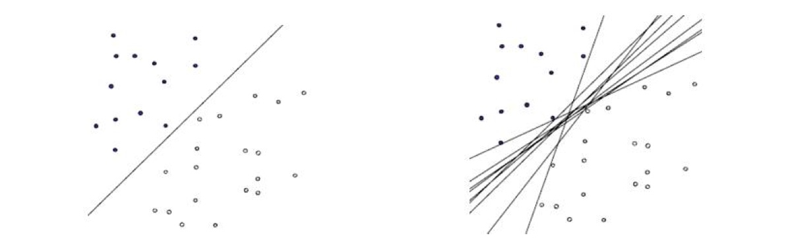
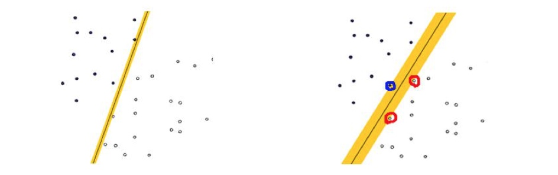
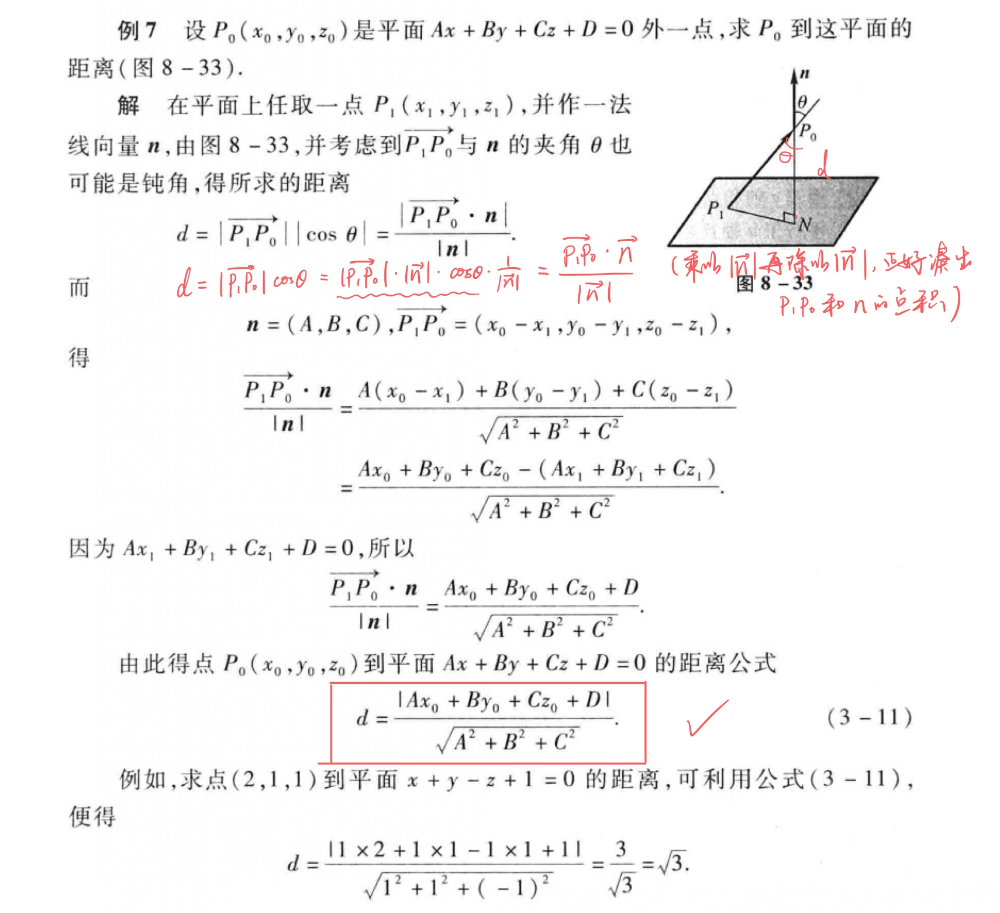
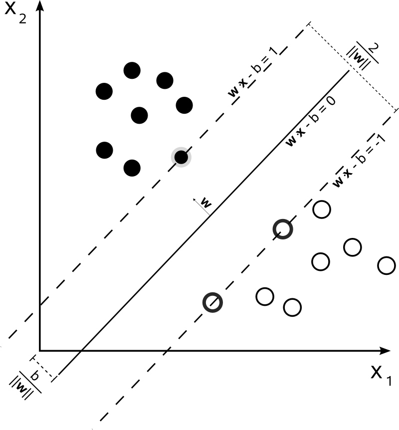

支持向量机(Support Vecor Machine,SVM)本身是一个二元分类算法,是对感知器算法模型的一种扩展,现在的SVM算法支持线性分类和非线性分类的分类应用,并且也能够直接将SVM应用于回归应用中.同时通过OvR或者OvO的方式我们也可以将SVM应用在多元分类领域中.在不考虑集成算法,不考虑特定的数据集的时候,在分类算法中SVM可以说是特别优秀的.
线性可分(Linearly Separable):在数据集中,如果可以找出一个超平面,将两组数据分开,那么这个数据集叫做线性可分数据.
线性不可分(Linear Inseparable):在数据集中,没法找出一个超平面,能够将两组数据分开,那么这个数据集就叫做线性不可分数据.
分割超平面(Separating Hyperplane):将数据集分割开来的直线/平面叫做分割超平面.
间隔(Margin):数据点到分割超平面的距离称为间隔.
支持向量(Support Vector):离分割超平面最近的那些点叫做支持向量.
线性可分SVM
在感知器模型中,算法是在数据中找出一个划分超平面,让尽可能多的数据分布在这个平面的两侧,从而达到分类的效果,但是在实际数据中这个符合我们要求的超平面是可能存在多个的.

在感知器模型中,我们可以找到多个可以分类的超平面将数据分开,并且优化时希望所有的点都离超平面尽可能的远,但是实际上离超平面足够远的点基本上都是被正确分类的,所以这个是没有意义的;反而比较关心那些离超平面很近的点,这些点比较容易分错.所以说我们只要让离超平面比较近的点尽可能的远离这个超平面,那么我们的模型分类效果应该就会比较不错了.(这个就是SVM的思想)

超平面和法向量
先回顾一下同济高数上的一个例题,求解点到平面的距离.

常见的平面概念是在三维空间中定义的:\(Ax+By+Cz+D=0\).
而d维空间中的超平面由下面的方程确定:\(w^Tx+b=0\),其中w和x都是d维列向量,\(x=(x_1,x_2,...,x_d)^T\)为平面上的点,\(w=(w_1,w_2,...,w_d)^T\)为平面的法向量.b是一个实数,代表平面与原点之间的距离.
点到超平面的距离
假设点\(x^{'}为超平面A:w^Tx+b=0上的任意一点,则点x到A的距离为x-x^{'}在超平面法向量w上的投影长度:\)
\[d=\dfrac{|w^T(x-x^{'})|}{||w||}=\dfrac{|w^Tx+b|}{||w||} \qquad 注意:w^Tx^{'}=-b,x^{'}为超平面上一点\]
这里,\(||w||是w的L_2范数\)
超平面的正面和反面
一个超平面可以将它所在的空间分为两半,它的法向量指向的那一半对应的一面是它的正面,另一面则是它的反面.
法向量的意义
法向量的大小是坐标原点到分离超平面的距离,垂直于分离超平面,方向由分离超平面决定.
线性可分SVM
支持向量到超平面的距离为:
\[\because w^Tx+b=\pm1 \\\
\because y \in \{+1,-1\} \\\
\therefore \dfrac{|y(w^Tx+b)|}{||w||}=\dfrac{1}{||w||}\]
备注:在SVM中支持向量到超平面的函数距离一般设置为1

SVM模型是让所有的分类点在各自类别的支持向量的两边,同时要求支持向量尽可能的远离这个超平面,用数学公式表示如下:
注意:
\[
\begin{cases}
w^T=(w_1,w_2,\cdots,w_n)\\\
||w||=\sqrt{w_1^2+w_2^2+\cdots+w_n^2}
\end{cases}
\]
\[
\begin{cases}
\max \limits_{w,b}\dfrac{1}{||w||} &\text {目标}\\\
s.t:y^{(i)}\left(w^Tx^{(i)}+b\right) \geq 1,i=1,2,...,m &\text {限制条件}
\end{cases}
\]
一般求最优化问题,都是求最小值,因此稍微将这个优化问题转换一下
\[
\begin{cases}
\min \limits_{w,b}\dfrac12||w||^2 &\text {目标}\\\
s.t:y^{(i)}\left(w^Tx^{(i)}+b\right) \geq 1,i=1,2,...,m &\text {限制条件}
\end{cases}
\]